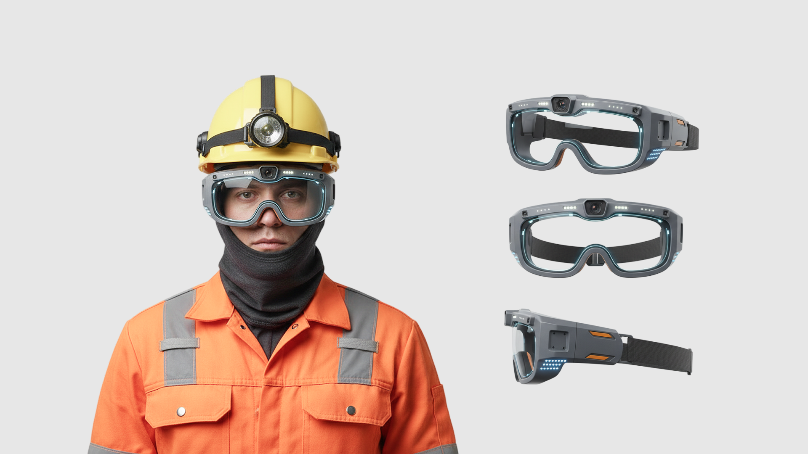

Smart Safety
A wearable concept that lets miners fix machinery without waiting for an engineer Um conceito wearable que permite ao minerador consertar a máquina sem esperar por um engenheiro
A two-month proof of concept that questioned its own brief. The client asked for a mobile app for mining engineers. We answered with a smart safety glass for the miners already standing in front of the broken machine. Uma prova de conceito de dois meses que questionou o próprio briefing. O cliente pediu um app mobile para engenheiros da mineração. Respondemos com uma safety glass inteligente para o minerador que já estava em frente à máquina quebrada.

Build a mobile app to support mining operations in India, cut the time miners wait for an engineer, and keep workers safe. Construir um app mobile para apoiar operações de mineração na Índia, reduzir o tempo que o minerador espera por um engenheiro e manter os trabalhadores em segurança.
Two constraints shaped everything that followed. Miners work in surface and underground mines, in hazardous conditions, so personal protective equipment is mandatory. And internet connectivity in these locations is unreliable, sometimes non-existent. Duas restrições moldaram tudo o que veio depois. O minerador trabalha em minas de superfície e subterrâneas, em condições perigosas, então o EPI é obrigatório. E a conectividade nesses lugares é instável, às vezes inexistente.
Design pair with Natalia L'Abbate. We split research evenly and worked through the concept together. I led more of the visual direction. Dupla de design com Natalia L'Abbate. Dividimos a pesquisa em partes iguais e construímos o conceito juntos. Assumi mais da direção visual.
Reading the businessLendo o negócio
The client is a global manufacturer with more than 95 years of history and vehicles in over 100 countries, dominant in mining haulers and excavators. What stood out was where they were heading: a steady move into AI, computing hardware, and new vehicle operating systems since 2016. Communication was consistent on three things, reliability, productivity at lower cost, and safety. That last one became our filter for every decision. O cliente é um fabricante global com mais de 95 anos de história e veículos em mais de 100 países, dominante em caminhões e escavadeiras de mineração. O que chamou atenção foi para onde estavam indo: um movimento constante em IA, hardware de computação e novos sistemas operacionais veiculares desde 2016. A comunicação era consistente em três pontos: confiabilidade, produtividade a custo menor e segurança. Esse último virou o filtro para todas as decisões.
Reframing the userReenquadrando o usuário
The request was an app for engineers. Looking at the goals next to the constraints, the framing had a problem. If a miner still has to wait for an engineer to travel to a remote site, the wait is shortened, not removed. Productivity still stops. The engineer is still exposed to the trip. So we shifted focus from the engineer to the miner and asked a different question: what if the person already standing in front of the broken machine could fix it? O pedido era um app para engenheiros. Olhando os objetivos ao lado das restrições, o enquadramento tinha um problema. Se o minerador ainda precisa esperar um engenheiro viajar até um site remoto, a espera é encurtada, não eliminada. A produtividade ainda para. O engenheiro ainda se expõe à viagem. Então mudamos o foco do engenheiro para o minerador e fizemos outra pergunta: e se a pessoa que já está em frente à máquina quebrada pudesse consertá-la?

First direction, and why it failedPrimeira direção, e por que falhou
Our first concept was a phone app built around image recognition and sound analysis. A miner points a phone at the machine, the app identifies the fault, and returns a step-by-step fix. It would also push alerts if conditions turned dangerous, like hazardous gases, so miners could evacuate in time. It worked on paper. Tested against the company's own three priorities, it fell short. O primeiro conceito foi um app de celular apoiado em reconhecimento de imagem e análise de som. O minerador aponta o celular para a máquina, o app identifica a falha e devolve um passo a passo para o conserto. Também mandaria alertas em caso de condição perigosa, como gases tóxicos, para o minerador evacuar a tempo. No papel funcionava. Testado contra as próprias três prioridades da empresa, não fechava a conta.
-
01
Safety.Segurança. A phone occupies a hand and pulls the eyes down, in an environment where attention is a safety mechanism. O celular ocupa uma mão e puxa o olhar para baixo, em um ambiente onde atenção é mecanismo de segurança.
-
02
Productivity.Produtividade. Complex repairs still meant calling an engineer to the site. Reparos complexos ainda dependiam de chamar um engenheiro até o local.
-
03
Reliability.Confiabilidade. A phone is one more device to carry, charge, and drop. O celular é mais um dispositivo para carregar, recarregar e deixar cair.
The tool was right. The form factor was wrong. A ferramenta estava certa. O formato estava errado.
The shift, Smart SafetyA virada, Smart Safety
Miners already wear protective equipment. It is mandatory, it is on their body, and it already has their attention. So instead of adding a device, we proposed upgrading the one they cannot take off. Smart Safety is a concept for personal protective equipment that protects and assists. The first product in the line: a safety glass. O minerador já usa EPI. É obrigatório, já está no corpo e já tem a atenção dele. Em vez de adicionar um dispositivo, propusemos evoluir o que ele não pode tirar. Smart Safety é um conceito de EPI que protege e assiste. O primeiro produto da linha: uma safety glass.

What the glass doesO que a glass faz
-
01
Visual guidance readable in low light and dust.Guia visual legível em pouca luz e poeira. High contrast, minimal chrome, information stays in the wearer's field of view. Alto contraste, cromo mínimo, informação sempre no campo de visão de quem usa.
-
02
Voice commands.Comandos por voz. Hands stay on the work. As mãos ficam no trabalho.
-
03
Image and sound analysis.Análise de imagem e som. Machinery is diagnosed in place, without moving to a separate device. A máquina é diagnosticada ali mesmo, sem precisar migrar para outro dispositivo.
-
04
AR repair overlays.Overlays de reparo em AR. Step-by-step instructions land on the machine itself, not on a phone screen. Passo a passo aparece sobre a própria máquina, não em uma tela de celular.
-
05
Hazard detection with evacuation routing.Detecção de risco com rota de evacuação. If the system reads a dangerous condition, it interrupts and points to the nearest exit. Se o sistema identifica uma condição perigosa, interrompe e aponta para a saída mais próxima.
-
06
IoT connectivity.Conectividade IoT. The glass links to other equipment on site and to remote engineers when the fix goes beyond what one miner can do alone. A glass se conecta a outros equipamentos do site e a engenheiros remotos quando o conserto passa do que um minerador resolve sozinho.
Connectivity was the hardest constraint. Live features assume infrastructure behind them, so the concept plans for Wi-Fi access points inside and around the mines, with satellite as fallback. Conectividade foi a restrição mais difícil. Recursos ao vivo pressupõem infraestrutura por trás, então o conceito considera pontos de acesso Wi-Fi dentro e no entorno das minas, com satélite como fallback.
The flowsOs fluxos
-
01
Diagnosis.Diagnóstico. The glass analyses the machinery in view and returns the fault with a recommended action. A glass analisa a máquina no campo de visão e devolve a falha com a ação recomendada.
-
02
Escalation.Escalonamento. When a repair is too complex to handle alone, the recommended action is to report the issue. That opens a call to a remote expert engineer, who guides the miner through the fix in real time. Voice commands move the miner from step to step, hands free. Quando o reparo é complexo demais para resolver sozinho, a ação recomendada é reportar. Isso abre uma chamada com um engenheiro remoto, que conduz o conserto em tempo real. Comandos de voz avançam o minerador entre os passos, com as mãos livres.
-
03
Remote guidance.Guia remota. The engineer appears in the corner of the miner's field of view while AR cues mark what to do on the machine. Guidance and machinery stay in the same frame, so nothing competes for attention. O engenheiro aparece no canto do campo de visão do minerador enquanto marcações em AR indicam o que fazer sobre a máquina. Orientação e máquina no mesmo quadro, para nada disputar a atenção.
-
04
Hazard alert.Alerta de risco. When the system detects a dangerous condition, such as a downpour or hazardous gas, it interrupts with an evacuation instruction. Quando o sistema detecta uma condição perigosa, como uma tempestade ou gás tóxico, interrompe com a instrução de evacuar.
-
05
Exit routing.Rota de saída. The glass shows the nearest exit, the direction to take, and an estimated time to get out. A glass mostra a saída mais próxima, o sentido a seguir e uma estimativa de tempo até sair.
-
06
Site recognition.Reconhecimento do site. The glass reads the state of the mine and the machinery around the wearer, surfacing safety information in context. A glass lê o estado da mina e das máquinas ao redor de quem usa, trazendo informação de segurança em contexto.


Smart Safety was designed as a line, not a single product. Natural expansions from the same principle: noise-cancelling earplugs for hearing protection, voice guidance, and calls; gloves with sensors linked to the glasses; smart textiles that read the environment and feed the other devices; and AR navigation extended across the site. Smart Safety foi pensado como uma linha, não como um produto único. Extensões naturais do mesmo princípio: plugs de ouvido com cancelamento de ruído para proteção auditiva, comandos por voz e chamadas; luvas com sensores conectadas à glass; têxteis inteligentes que lêem o ambiente e alimentam os outros dispositivos; e navegação em AR estendida por todo o site.
The brief asked for an app for engineers. What the goals actually described was a problem about distance: the gap between a broken machine and the knowledge to fix it. Once we framed it that way, the answer stopped being a better app and started being a better piece of safety equipment. The most useful thing we did was question the deliverable before designing it. Smart Safety was a proof of concept and was not taken to production. O briefing pediu um app para engenheiros. O que os objetivos descreviam de fato era um problema de distância: o espaço entre a máquina quebrada e o conhecimento para consertá-la. Quando enquadramos assim, a resposta deixou de ser um app melhor e passou a ser um EPI melhor. A coisa mais útil que fizemos foi questionar o entregável antes de desenhar. Smart Safety foi uma prova de conceito e não foi levada a produção.